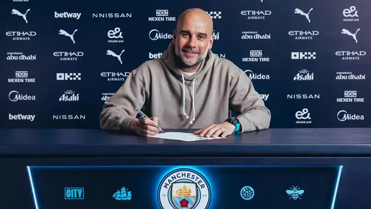

"Belki de dört mağlubiyetten dolayı oldu." - Guardiola sözleşmesini uzattı
Manchester City teknik direktörü Pep Guardiola, teknik direktörlük kariyerinde ilk kez dört maç üst üste kaybettikten sonra kulüpten ayrılamayacağını söyledi. Guardiola, City ile olan sözleşmesini 2027 yılına kadar uzatarak iki yıllık yeni bir anlaşmaya imza attı.
2016 yılında City'e katılan 53 yaşındaki İspanyol teknik adam, görev süresinde altı Premier Lig şampiyonluğu da dahil olmak üzere toplamda 18 kupa kazandı. Mevcut sözleşmesi sezon sonunda sona erecekken, Tottenham, Brighton, Sporting ve Bournemouth’a karşı alınan mağlubiyetlerin ardından yeni bir anlaşmaya imza attı. "Şimdi ayrılamazdım. Belki de bu dört mağlubiyet bir etkendi," dedi Guardiola kulübün internet sitesine verdiği demeçte. "Dört mağlubiyetin ardından toparlanmamız ve durumu tersine çevirmemiz gerektiğine inanıyorum. Bunu hak ettiğimizi düşünüyorum. Bu bir kibir değil; sadece gerçeği söylüyorum." Guardiola, City'yi yeniden istikrarlı ve başarılı bir seviyeye taşımak için çalışmaya kararlı olduğunu ifade etti. "Kaybettiğimiz o seviyeyi yeniden kazanmamız gerekiyor çünkü şu anda o noktada değiliz. Ana hedefimiz bu," diye ekledi. Bu durum, Guardiola’nın teknik direktörlük kariyerinde (penaltı atışları hariç) ilk kez bu tür bir mağlubiyet serisi yaşadığı anlamına geliyor. Guardiola ayrıca Manchester City ile olan güçlü bağını vurgulayarak, kulüpte olmanın kendisi için ne kadar anlamlı olduğunu ve bir teknik direktörün isteyebileceği her şeye sahip olduğunu söyledi. "Bu burada geçirdiğim dokuzuncu sezon ve birlikte çok sayıda inanılmaz an yaşadık. Bu kulübe gerçekten özel bir bağım var," dedi. "Şimdi hedefim, kazandığımız kupalara yenilerini eklemek." Guardiola’nın sözleşmesini uzattığına dair haberler Çarşamba günü ortaya çıktı ve kulüp ertesi gün bu haberi resmen doğruladı.